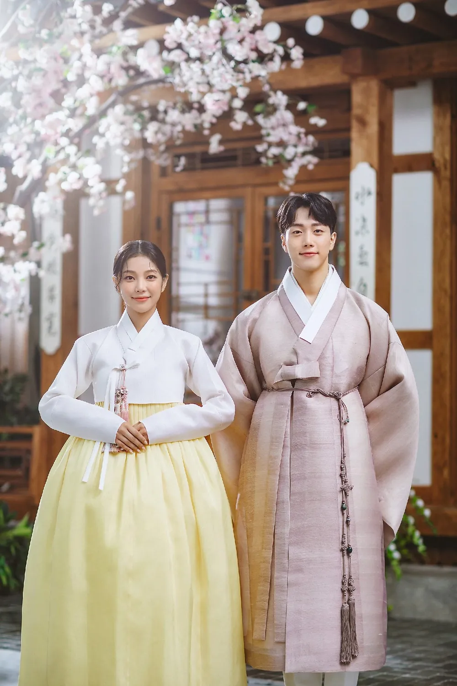

.jpg)
A cultura da Coreia do Sul é uma combinação de tradições antigas e modernidade.
O país preserva costumes influenciados pelo confucionismo, que valoriza o respeito aos mais velhos, a educação, a disciplina e a harmonia social.
Ao mesmo tempo, a Coreia do Sul é reconhecida mundialmente por sua tecnologia avançada e por sua forte influência na cultura popular.
Um dos principais símbolos da cultura coreana é o hanbok, traje tradicional usado em festas, cerimônias e datas especiais.
A culinária também é uma parte importante da cultura, com pratos típicos como kimchi, bibimbap e bulgogi.
Além disso, festivais tradicionais, apresentações de música e danças folclóricas ajudam a preservar a identidade cultural do país.
Nas últimas décadas, a Coreia do Sul ganhou destaque internacional por meio da Onda Coreana (Hallyu), que inclui o sucesso do K-pop, dos dramas coreanos (K-dramas), dos filmes e das séries de televisão.
Grupos musicais e produções audiovisuais sul-coreanas conquistaram milhões de fãs em todo o mundo.
A cultura sul-coreana também valoriza a educação e o desenvolvimento tecnológico, sendo comum o uso de inovações digitais no cotidiano.
Dessa forma, a Coreia do Sul se destaca por unir suas tradições históricas com a modernidade, criando uma cultura única e influente em diversos países.
